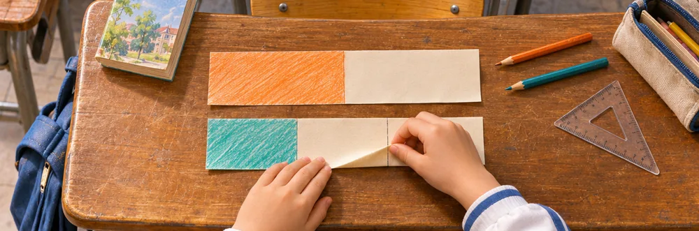

0–4 分钟 · 1 / 6
半条再加三分之一条
两人各取同样长的一条纸。先估一估，合起来比半条长吗？

1/2 ＋ 1/3 先估范围，再动笔。
教师讲稿与观察点
请学生独立画出整体。若有人预计 2/5，请他对照“加了以后应比半条长”自行检验，暂缓公布答案。
4–10 分钟 · 2 / 6
把“怎样分”画出来
各自把两张等长纸条涂出 1/2 和 1/3。同桌交换，只问：“你数的一份是哪一块？”
教师讲稿与观察点
A 班先听“平均分”的原指令。老师记下第一种画法和学生解释。B 班沿用两条等长纸，明确叠齐后各折六格。
10–18 分钟 · 3 / 6
换一种刻度，涂色的长度变了吗？
请老师点“统一为六等份”。指给同桌看：原来半条，为什么变成三格？
先比较两行每格的宽度。
教师讲稿与观察点
请助手只主持这段，先等学生指图，再动刻度。追问“颜色没变，什么变了？”由老师翻到下一页。
18–26 分钟 · 4 / 6
谁能解释五格从哪里来？
把图和算式一项项对上。哪一句足以解释为什么可以相加？
教师讲稿与观察点
请一人讲解，一人指图。听到“分母相加”时，让他检验半张加半张，保留他的第二次解释。
26–34 分钟 · 5 / 6
换一道题，还能找到共同单位吗？
算 1/2＋1/4。先不用六格，选一个两种涂色都能完整覆盖的刻度。
完成后核对
把等长纸条各分四格。半条是两格，四分之一是一格，合为 3/4。
教师讲稿与观察点
收一份能解释单位的样例和一份仍需提示的样例。下课前不给学生贴能力标签。
34–40 分钟 · 6 / 6
留给下一班的证据
交一张图：圈出你相加的那一份，写“我在数___个___”。
课堂记录保留：题目、学生原话、所指的格子、教师是否提示。
教师讲稿与观察点
老师匿名保存观察，在同一份 lesson-plan.md 修订一句指令。不同班级、不同基础会影响表现；下一次换题再检验。